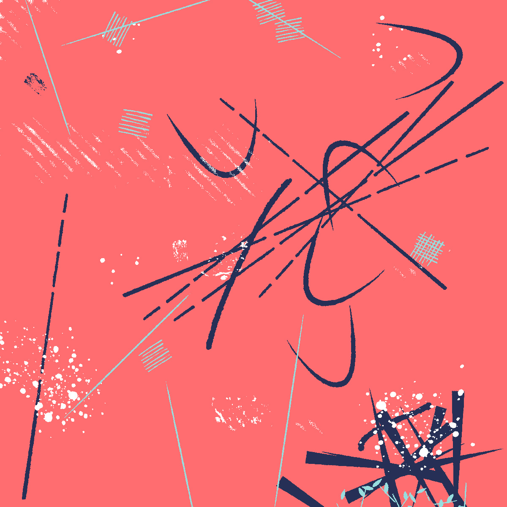

Exploring ways to connect with God in the 21st Century
We are explorers, inventors, artists, designers, poets, authors, scientists...
We are explorers, inventors, artists, designers, poets, authors, scientists...
The Center for experimental liturgy is not a place where I have to be on my own to find other people to confide in. So much of what I get about the church is that I need to be with other people, and that sometimes that's better, sometimes it isn't.
The Center for experimental liturgy is not a place where I have to be on my own to find other people to confide in. So much of what I get about the church is that I need to be with other people, and that sometimes that's better, sometimes it isn't.
Look this is just a thing. Just believe me.